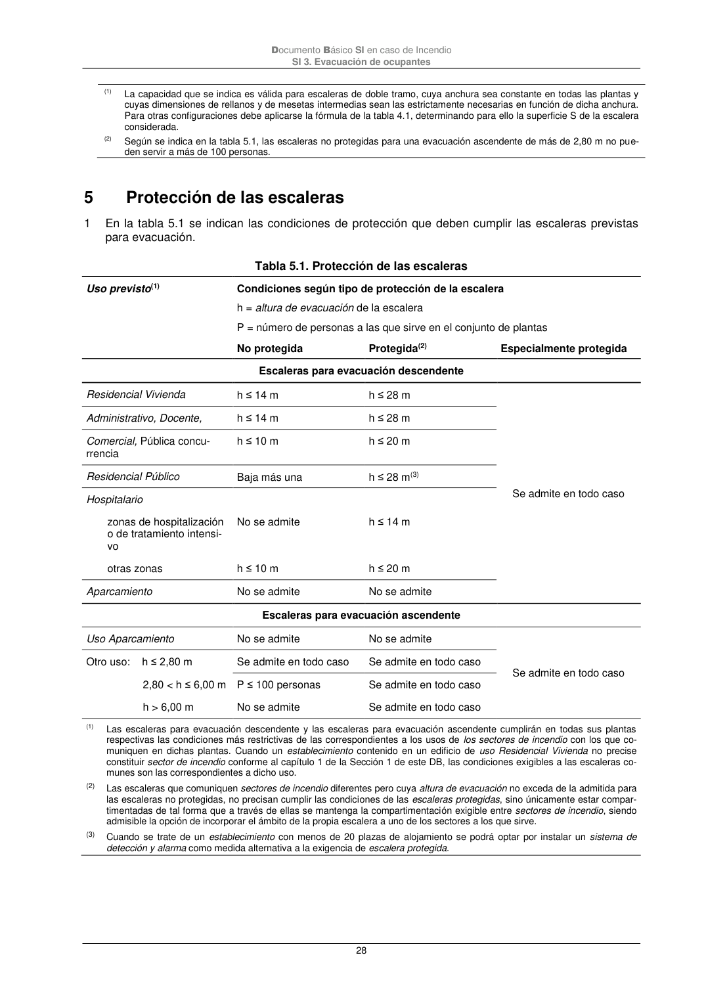

DB-SI Seguridad en caso de incendio · edición 2025-03-04 · capa oficial
Documento DB-SI-oficial · SHA-256 del PDF 0a2e78cd62471d9cc5cfe2efbc6aa39fdbad73c124aea7b039f9de96c141e105
Página física 28 de 92.
Copia fiel del PDF fuente · Fuente oficial
Ficha de la disposición en la fuente oficial
Formato: Texto de la página (Markdown)
Documento Básico SI en caso de Incendio SI 3. Evacuación de ocupantes 28 (1) La capacidad que se indica es válida para escaleras de doble tramo, cuya anchura sea constante en todas las plantas y cuyas dimensiones de rellanos y de mesetas intermedias sean las estrictamente necesarias en función de dicha anchura. Para otras configuraciones debe aplicarse la fórmula de la tabla 4.1, determinando para ello la superficie S de la escalera considerada. (2) Según se indica en la tabla 5.1, las escaleras no protegidas para una evacuación ascendente de más de 2,80 m no pue- den servir a más de 100 personas. 5 Protección de las escaleras 1 En la tabla 5.1 se indican las condiciones de protección que deben cumplir las escaleras previstas para evacuación. Tabla 5.1. Protección de las escaleras Uso previsto(1) Condiciones según tipo de protección de la escalera h = altura de evacuación de la escalera P = número de personas a las que sirve en el conjunto de plantas No protegida Protegida(2) Especialmente protegida Escaleras para evacuación descendente Residencial Vivienda h ≤ 14 m h ≤ 28 m Se admite en todo caso Administrativo, Docente, h ≤ 14 m h ≤ 28 m Comercial, Pública concu- rrencia h ≤ 10 m h ≤ 20 m Residencial Público Baja más una h ≤ 28 m(3) Hospitalario zonas de hospitalización o de tratamiento intensi- vo No se admite h ≤ 14 m otras zonas h ≤ 10 m h ≤ 20 m Aparcamiento No se admite No se admite Escaleras para evacuación ascendente Uso Aparcamiento No se admite No se admite Se admite en todo caso Otro uso: h ≤ 2,80 m Se admite en todo caso Se admite en todo caso 2,80 < h ≤ 6,00 m P ≤ 100 personas Se admite en todo caso h > 6,00 m No se admite Se admite en todo caso (1) Las escaleras para evacuación descendente y las escaleras para evacuación ascendente cumplirán en todas sus plantas respectivas las condiciones más restrictivas de las correspondientes a los usos de los sectores de incendio con los que co- muniquen en dichas plantas. Cuando un establecimiento contenido en un edificio de uso Residencial Vivienda no precise constituir sector de incendio conforme al capítulo 1 de la Sección 1 de este DB, las condiciones exigibles a las escaleras co- munes son las correspondientes a dicho uso. (2) Las escaleras que comuniquen sectores de incendio diferentes pero cuya altura de evacuación no exceda de la admitida para las escaleras no protegidas, no precisan cumplir las condiciones de las escaleras protegidas, sino únicamente estar compar- timentadas de tal forma que a través de ellas se mantenga la compartimentación exigible entre sectores de incendio, siendo admisible la opción de incorporar el ámbito de la propia escalera a uno de los sectores a los que sirve. (3) Cuando se trate de un establecimiento con menos de 20 plazas de alojamiento se podrá optar por instalar un sistema de detección y alarma como medida alternativa a la exigencia de escalera protegida.
